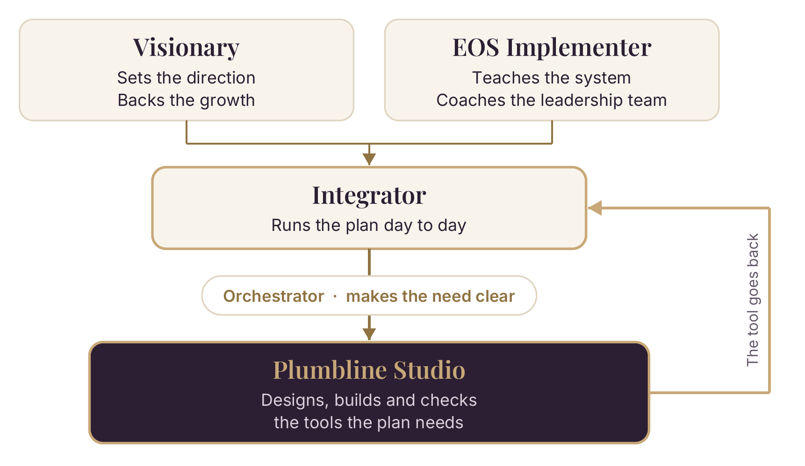
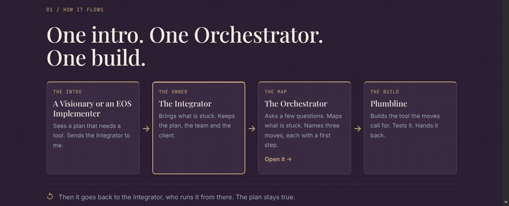
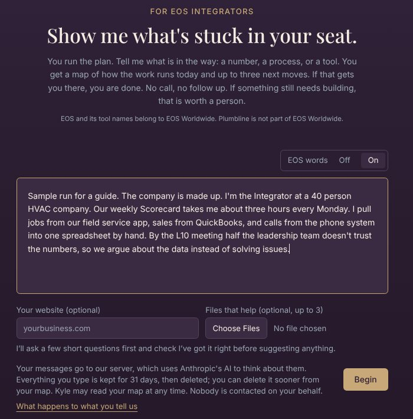
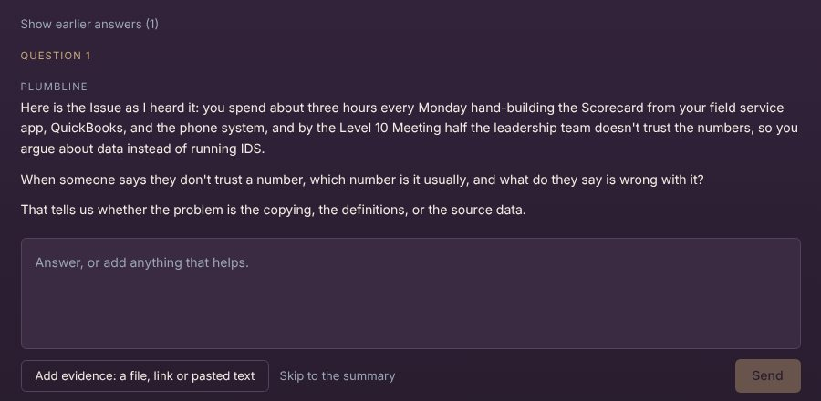
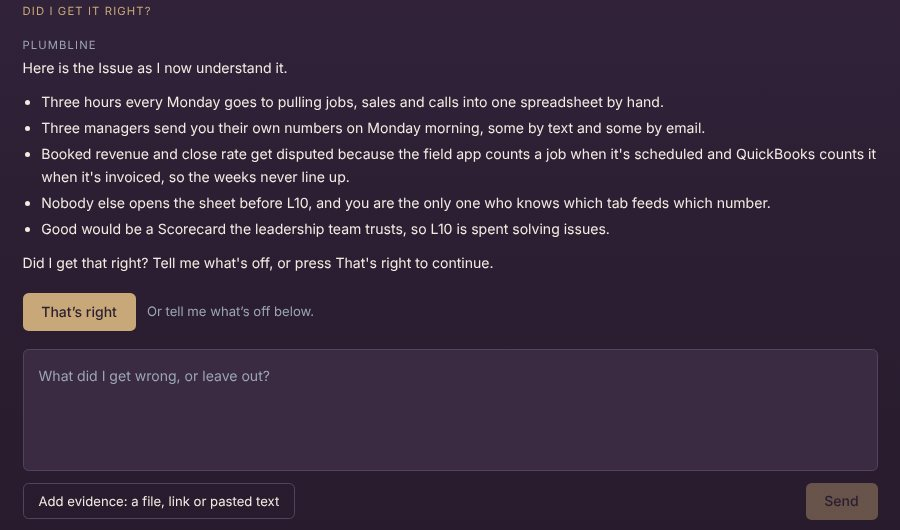
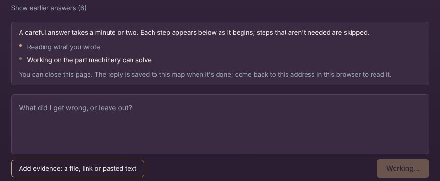
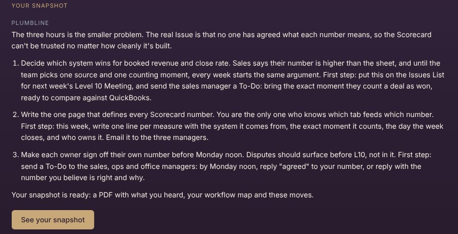
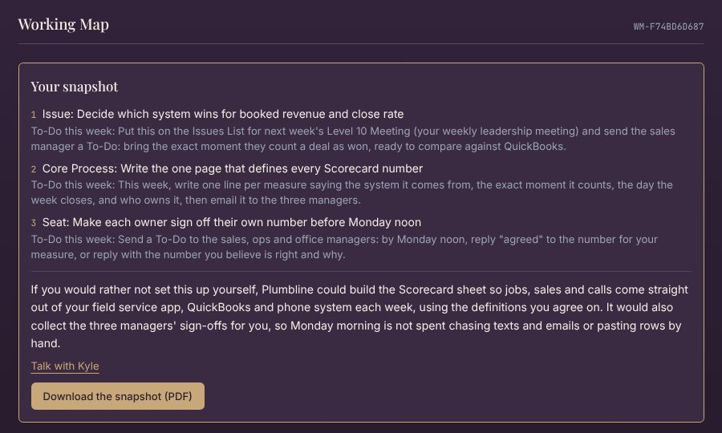

Orchestrator Guide
The Orchestrator is a free tool for EOS Integrators. You tell it what is stuck. It asks a few questions, maps the work, and gives you up to three next moves. This guide shows how it works, and what happens after.
Try the Orchestrator, always free It takes a few minutes. Or see a full sample run first.Updated November 24, 2026
01 / The short version
Visionaries and EOS Implementers send Integrators to the Orchestrator. If something still needs building, Plumbline builds it. The Implementer keeps the coaching. The Integrator owns the plan and the tool.
02 / The gap it fills
An Implementer meets with the leadership team a few days a year. The rest of the year, the Integrator runs the plan. A lot of that still lives in spreadsheets, numbers typed by hand, and steps that only one person knows.
When that happens, the weekly meeting fills up with arguments about the data. The team spends its time on the numbers instead of on the Issues. That is the gap the Orchestrator and Plumbline are for.
03 / Who does what

Tap the chart to see it full size.
This is the front of plumblinestudio.dev. It shows the whole path, then a loop back to the Integrator.

04 / How it fits with EOS
What Plumbline does
What Plumbline does not do
05 / Your words and your data
The full privacy page is on the Orchestrator.
06 / A walk through
Here is one made up Integrator going through the whole path. The pictures are the live tool.
This is a sample. The HVAC company is made up, and so are its answers. The questions, the moves, the map and the snapshot are what the live Orchestrator gave back on November 24, 2026.
Forwards a short note with the Orchestrator link.
Types what is in the way, in their own words.
Asks short questions, one at a time.
Reads it back and taps "That's right", or fixes it.
Each move has a first step for this week.
A map of how the work runs today, and a PDF to keep.
If the moves are enough, they are done. If not, they talk with me.
One page first. Paid first. A note every week. The tool is theirs.
I thank the person who made the intro.
Step 1
A Visionary sees their Integrator lose every Monday to the Scorecard. They forward a short note with the link. Nobody books a call yet.
Step 2
The Integrator opens the link. EOS words are on, so the tool speaks in EOS terms. They type what is in the way:
"Our weekly Scorecard takes me about three hours every Monday. I pull jobs, sales and calls into one spreadsheet by hand. By the L10 meeting half the leadership team doesn't trust the numbers."
A website and files are optional. Then they press Begin.

Step 3
The Orchestrator says back what it heard. Then it asks one short question, and says why it is asking.
In this sample it asked two: which number people don't trust, and who else touches the Scorecard. The made up answers were: booked revenue and close rate, because the field app counts a job when it is scheduled and QuickBooks counts it when it is invoiced. Three managers each send their own number on Monday by text or email.

Step 4
Before it suggests anything, it reads the whole picture back as a short list. The Integrator taps "That's right", or types what is off.
Nothing is suggested until the person agrees. That is the rule.

Then it works for a minute or two. Each step shows on screen as it starts.

Step 5
It names the real problem first. Here it said the three hours is the smaller problem. The real Issue is that nobody has agreed what each number means.
Then it gave three moves, each with a first step for this week. With EOS words on, each move is framed as an Issue, a Core Process or a Seat.

Step 6
The map page holds the moves and a short line on what Plumbline could build. The snapshot is a PDF to keep.
It has what was heard, how the work moves today with the stuck steps marked "Issue here", the moves, where a person would help, and a cheaper option first.

The three pages of the sample snapshot. Tap a page to see it full size. Notice the cheaper option: if they already work with an EOS Implementer, the snapshot tells them to take it there first.
Step 7
If the three moves are enough, the Integrator is done. There is no call and no follow up.
If something still needs building, they talk with me. In this sample, the build would be a Scorecard sheet that pulls jobs, sales and calls straight from the field app, QuickBooks and the phone system each week. It would also collect each manager's sign off before Monday noon.
Step 8
These are the four build steps, filled in for this sample.
One stuck thing. Bring your Orchestrator snapshot, or just tell me.
In the sample: the Integrator brings the snapshot. If an Implementer made the intro, they keep the coaching.
We talk for 30 minutes. Then you get one page: what I build, what "done" means, the price and the start week.
In the sample: one page for the Scorecard sheet. "Done" means three Mondays in a row with no hand copying and every owner signed off. Plus the price and the start week.
You pay first. I build and test. You get a short note in writing every week.
In the sample: paid first. Each week a short note says what changed, so it can go to the weekly meeting.
You get the tool, plain notes and a short walkthrough. You can show it as your own.
In the sample: the Integrator gets the sheet, plain notes and a short walkthrough. They run it from there.
Step 9
I thank the person who made the intro and tell them how it went, if the client says that is OK. No referral fee is paid.
07 / If you need a build
Every build runs the same way, so you can always see where it stands. This matters even more when an Implementer made the intro, because their name is on the line too.
One page: what gets built, what "done" means, the price and the start week. New ideas that come up later are priced on their own, so the price does not drift.
A short note in writing every week. A working demo early, when it helps.
Every change passes automatic checks and a person's review. An AI never sends, posts or pays anything in your name.
It has to pass the "done" list before you sign off. You get the tool, the keys and plain notes to run it without me. It can run in accounts you own.
For 30 days, I fix anything that fails the "done" list. If you want help keeping it running as your other tools change, there is a care plan. You do not have to take it.
08 / Who is behind it
I have spent 16 years fixing how companies run. Now I build the tools that keep the fix in place: apps, client portals, and AI tools. I build them, test them, and hand them back. The tool belongs to the client.
Every build starts small. The line on my site is: "You run the plan. I build what it's missing."
It takes a few minutes. Nobody is contacted for you.
Book a 30 minute call · kyle@plumblinestudio.dev · Back to the home page